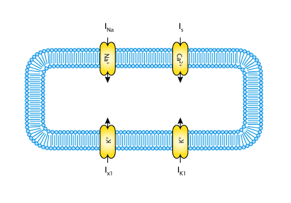
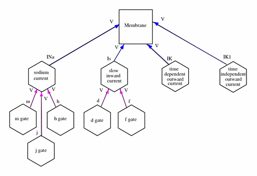

This model has been modified to demonstrate uncertainty, by modifying the variable x1_open in the component time_dependendent_outward_current to be normally distributed with mean 0.008 and variance 10-6. This choice of distribution is arbitrary, but demonstrates how posterior parameter distributions computed for a variable might be represented in practice.
In contrast to the earlier Purkinje fibre ionic current models of D. Noble (1962) and R.E. McAllister, D. Noble and R.W. Tsien (1975), the G.W. Beeler and H. Reuter 1977 model was developed to describe the mammalian ventricular action potential. Not all the ionic currents of the Purkinje fibre model are present in ventricular tissue; therefore, this model is simpler than the MNT model. The total ionic flux is divided into only four discrete, individual ionic currents (see the figure below). The main additional feature of the Beeler-Reuter ionic current model is a representation of the intracellular calcium ion concentration.
The complete original paper reference is cited below:
Reconstruction of the action potential of ventricular myocardial fibres, Beeler, G.W. and Reuter, H. 1977, Journal of Physiology, 268, 177-210. PubMed ID: 874889
|  |
| A schematic diagram describing the current flows across the cell membrane that are captured in the BR model. |
|  |
| The network defined in the CellML description of the Beeler-Reuter model. A key describing the significance of the shapes of the components and the colours of the connections between them is in the notation guide. For simplicity, not all the variables are shown. |
The membrane physically contains the currents as indicated by the blue arrows in the figure above. The currents act independently and are not connected to each other. Several of the channels encapsulate and contain further components which represent activation and inactivation gates. The addition of an encapsulation relationship informs modellers and processing software that the gates are important parts of the current model. It also prevents any other components that aren't also encapsulated by the parent component from connecting to its gates, effectively hiding them from the rest of the model.
The breakdown of the model into components and the definition of encapsulation and containment relationships between them is somewhat arbitrary. When considering how a model should be broken into components, modellers are encouraged to consider which parts of a model might be re-used and how the physiological elements of the system being modelled are naturally bounded. Containment relationships should be used to provide simple rendering information for processing software (ideally, this will correspond to the layout of the physical system), and encapsulation should be used to group sets of components into sub-models.